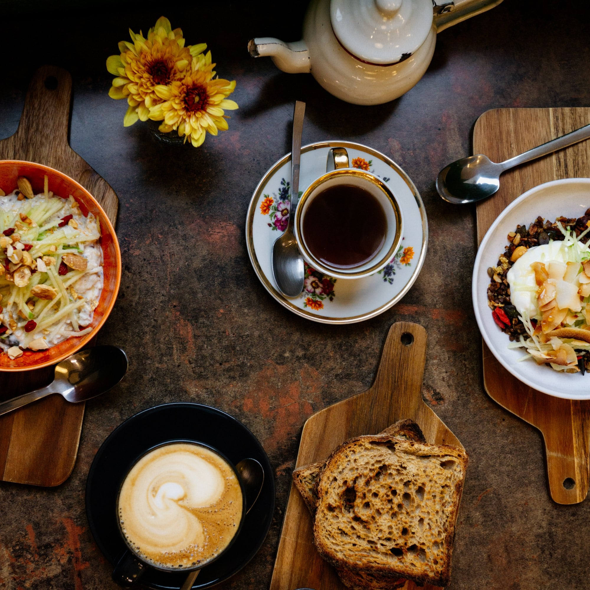
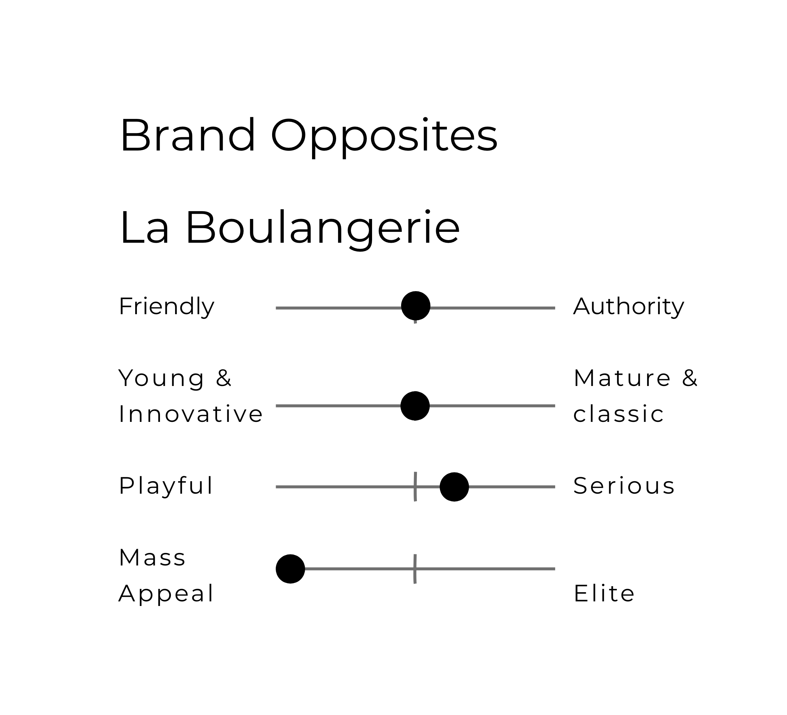

Research
In the research phase we were three Product designers working together on getting to know Fatima and Frank, the motivation to start Tiffin and significanse Tiffin has on their community. We research the competition and to find out what they did well and what they could improve on.

Desk Research
The values and business goals for Tiffin Café

User Research
Surveys & Interviews
